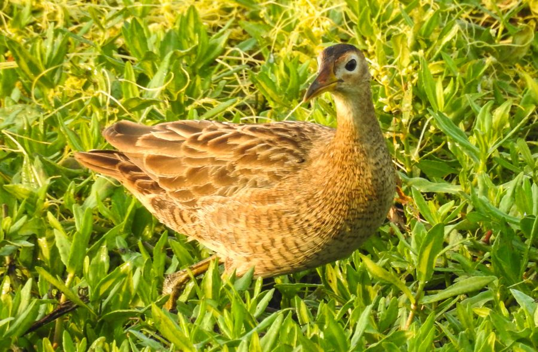

कोराWatercock
Gallicrex cinerea · Rallidae · BRD-0156

- Scientific name वैज्ञानिक नाम
- Gallicrex cinerea (Gmelin, 1789)
- Family कुल
- Rallidae
- Hindi हिंदी
- कोरा
- Local names स्थानीय नाम
- kora, korra, watercock, water cock
- Status here यहाँ की स्थिति
- native
- Movement आवागमन
- Resident; numbers rise with migrants
- IUCN IUCN
- LC
- Review समीक्षा
- audited and independently read
When to look कब देखें
Expected mainly in May, June, July, August, September, October, November. मुख्यतः मई, जून, जुलाई, अगस्त, सितंबर, अक्टूबर, नवंबर में अपेक्षित।
Populations fluctuate seasonally; breeding residents are joined by migratory birds during monsoon. Breeding range includes eastern India and Southeast Asia; some Indian birds may move locally. All migrants and visitors →
Uses and possibilities उपयोग और संभावनाएँ
Drawn from the documented uses in the profile below, where each is labelled traditional, current or a research lead. All uses →
कोरा / Watercock
Gallicrex cinerea (Gmelin, 1789) — Rallidae
कोरा — यह नर काली चिड़िया है जो दलदली जगहों में रहती है, और मादा भूरी होती है। बरसात में बहुत दिखाई देती है, जब नई घास बढ़ती है। यह पानी के किनारों पर चलती है, दौड़ती नहीं। गहरी आवाज़ें करती है, जैसे किसी को पुकार रही हो। यह नीचे देश की एक परिचित चिड़िया है।
Quick Identification त्वरित पहचान
| Feature | Description |
|---|---|
| Size | Medium rail, 25–28 cm long |
| Male plumage | Entirely dark grey to black; glossy |
| Female plumage | Brown and buff; heavily streaked and barred |
| Head | Small, rounded; males have red frontal shield and red bill; females lack red |
| Legs | Long, grey or greenish; placed laterally on body for wading |
| Tail | Short, often held upright; rail-like |
| Behaviour | Walks on floating vegetation and mud; skulks in reeds |
| Call | Deep, guttural croaking or booming call |
Field tip: In eastern UP, look for this rail in reed beds and swampy areas, particularly during monsoon. The male is entirely grey-black with a red frontal shield; the female is cryptically brown and barred. Both have long legs and move with a purposeful walking gait. The deep, booming call is often the first sign of presence.
हिंदी — कैसे पहचानें:
नर काला-भूरा, मादा भूरी।
लंबी टाँगें।
दलदल और नरकट में रहता है।
गहरी आवाज़।
Morphology आकारिकी
Biometrics:
| Measurement | Range |
|---|---|
| Total length | 250–280 mm |
| Wing (flattened chord) | 125–140 mm |
| Tail | 50–65 mm |
| Bill | 28–35 mm |
| Tarsus | 45–55 mm |
| Weight | 170–250 g |
Plumage — Breeding Males: Entirely dark grey to blackish; glossy sheen on feathers. Head and neck very dark. Wings darker than back. Tail short, dark, often held upright.
Plumage — Females and Non-breeding Males: Brown and buff; heavily streaked with black. Head buff with dark streaking. Upper back brown; lower back darker. Underparts buff with dark streaking. Tail brown with barring.
Head: Small and rounded. In breeding males: red frontal shield (bare skin on forehead) and red or red-orange bill. In females: no red; bill greenish or olive. Eyes dark brown.
Bill: Long, relatively straight, pointed. Breeding males have red to red-orange coloration; females greenish.
Legs: Long, suited for wading. Toes long and spread for walking on floating vegetation. Grey or greenish in colour.
Sexes: Strongly dimorphic in breeding season; males black-grey, females brown and barred. Non-breeding males resemble females.
Juveniles: Resemble females; duller and less distinctly marked.
Vocalisations
Highly vocal, particularly during breeding season:
- Main call: A deep, guttural croak or booming call, often described as kroop-kroop or krwak-krwak; carries for long distance across wetlands.
- Alarm call: A loud chuck or kook when alarmed.
- Contact call: Softer chirps between pairs.
हिंदी: बहुत गहरी, तेज़ आवाज़ दिन-रात।
Behaviour & Ecology व्यवहार और पारिस्थितिकी
Ground forager: Feeds on the ground and in shallow water, consuming:
- Insects and insect larvae (aquatic and terrestrial)
- Frogs and tadpoles
- Small fish and crustaceans
- Seeds and shoots of wetland plants
- Aquatic snails
Feeding technique: Walks through shallow water and reed beds, probing in mud and water for food. May dive briefly for aquatic invertebrates.
Habitat specialization: Strictly dependent on wetland habitats with dense vegetation. Requires reed beds, swamps, and flooded grasslands for breeding and feeding.
Breeding ecology: Monogamous; pairs defend breeding territories in reed beds. Males are highly vocal during breeding season, calling day and night.
Territorial: Males are aggressive toward rivals during breeding season.
Partial migrant: Largely resident in eastern India; breeding populations are augmented by migratory birds from northern breeding grounds during monsoon. Some breeding birds may move locally with water availability.
हिंदी: दलदल और नरकट में जीवन बिताता है। गहरी आवाज़ दिन-रात सुनाई देती है।
Life Cycle / Phenology जीवन चक्र
Partial migrant: Presence increases during monsoon breeding season (June–October); fewer birds during dry season. Exact patterns depend on water availability.
Breeding: June to October; peak July–August when monsoon rains fill wetlands.
Nesting: Ground nest — a platform of reeds and vegetation built in shallow water of reed bed or swamp. Both sexes participate in nest building.
Eggs: 6–10 greenish or olive eggs with dark markings; incubation approximately 14–16 days by both parents.
Chicks: Precocial; leave nest within hours. Parents guard chicks; chicks feed themselves initially.
Fledging: Chicks become independent at approximately 6–8 weeks.
Roosting: In reed beds and emergent vegetation near water; may roost communally.
Dry season: Numbers decline during dry season (November–May) as wetlands shrink.
हिंदी: बरसात में आ जाता है। बर्फानी में चली जाती है।
Host Plants or Prey आहार
| Food Type | Examples |
|---|---|
| Aquatic insects | Dragonflies, damselflies, aquatic beetles |
| Insect larvae | Chironomid larvae, mosquito larvae |
| Amphibians | Tadpoles, frogs |
| Aquatic fauna | Small fish, crustaceans, snails |
| Plant material | Seeds, shoots of wetland plants |
हिंदी: मुख्य रूप से जलीय कीड़े, टड़पोल, और छोटी मछलियाँ।
Predators / Natural Enemies शत्रु
- Snakes: Aquatic and semi-aquatic snakes
- Raptors: Marsh eagle and other raptors
- Crows and corvids: Depredate eggs and chicks
- Jackals and wild dogs: May hunt along wetland margins
- Habitat loss: Loss of wetlands due to drainage and conversion
- Water pollution: Degradation of wetland quality
हिंदी: साँप, बाज़, कौवे का खतरा। दलदलों के सूखने से जगह खोजना मुश्किल हो गया है।
Agricultural / Human Relevance कृषि प्रासंगिकता
Protected species: Listed in Schedule IV of the Wildlife (Protection) Act 1972, amended 2022. All wild birds are protected.
Wetland indicator: The presence of Watercock is an indicator of healthy, vegetated wetlands with appropriate water levels and aquatic insect abundance.
Pest control: By consuming aquatic insect larvae including mosquito larvae, the species provides some benefit in mosquito control in wetland areas.
Habitat dependence: Entirely dependent on wetland habitats. The species is vulnerable to wetland drainage, conversion to agriculture, pollution, and hydrological changes (such as altered flooding patterns due to dams or barrages).
Tolerance of cultivation: May use flooded paddy fields and other wetland habitats within agricultural landscapes, making it somewhat adaptable.
हिंदी: विधि अधिनियम 1972 के तहत संरक्षित है। दलदलों को बचाना जरूरी है।
Expected Locally स्थानीय रूप से अपेक्षित
Not a field record. Written from published accounts for eastern Uttar Pradesh. No confirmed local sighting yet — if you have seen it, that is what the atlas needs.
अभी तक स्थानीय पुष्टि नहीं। यह विवरण प्रकाशित स्रोतों से है, किसी अवलोकन से नहीं।
The Watercock is expected as a seasonal or partial migrant in reed beds, marshes, and swampy areas of Basti and Ayodhya districts, with numbers increasing during the monsoon breeding season (June–October) when water levels rise and reed beds fill with nesting birds. The species should be listened for rather than watched, as it is secretive and skulking. The deep, booming call given day and night during breeding season is often the best indication of presence. Look in reed beds bordering the Ghaghra, Rapti, and other water bodies. A first record would be a clear photograph or audio recording of the call, with date and location.
हिंदी: बरसात में नरकट और दलदलों में सुनो। गहरी आवाज़ दिन-रात।
Distribution वितरण
Global range: Indian subcontinent and Southeast Asia, particularly in areas with extensive wetlands and reed beds.
In India: Distributed across suitable wetland habitat throughout the mainland, particularly in areas with large wetlands and monsoon flooding.
In Uttar Pradesh: Present in wetland areas throughout the state; seasonal populations increase during monsoon.
In Basti district / eastern UP: Expected in reed beds and marshes throughout the region, with highest numbers during monsoon breeding season.
Research Questions शोध प्रश्न
- What are the population fluctuations of Watercock in Basti district across seasons? Are there distinct breeding and non-breeding populations?
- Do Watercock from eastern UP breeding populations migrate south, or remain locally? Where are the wintering sites?
- बरसात में कितने पक्षी आते हैं? How much does population size vary year to year?
- What is the minimum size of reed bed required to maintain a breeding population?
- How are populations affected by water management (dams, barrages) that change monsoon flooding patterns?
- What is the acoustic ecology — how many males per hectare of reed bed, and what is home range size?
Similar Species मिलती-जुलती प्रजातियाँ
| Species | How to distinguish | हिंदी | Field Rule |
|---|---|---|---|
| Purple Swamphen (Porphyrio porphyrio) — if present | Much larger (43 cm); purple and red plumage; red bill and shield; wetland habitat | नीला मुर्गा | Purple Swamphen is much larger with bright purple plumage and red frontal shield. Watercock is smaller, more cryptic. |
| Brown Crake (Amaurornis akool) — if sympatric | Smaller; brown plumage; lacks red coloration; different habitat preference | भूरी मुर्गा | Brown Crake is smaller, all-brown, lacks red bill. Watercock males are grey-black, have red frontal shield. |
Field rule: Deep, booming call from reed bed during monsoon = Watercock. Breeding male entirely grey-black with red frontal shield and red bill. Female brown and barred. Both have long legs suited for wading in shallow water.
Taxonomy & Classification वर्गीकरण
Original description. Described by Johann Friedrich Wilhelm Gmelin in 1789 as Gallinula cinerea. Type locality: India.
Subspecies. Monotypic — Gallicrex cinerea cinerea. No subspecies are recognised.
Family and order placement. Order Gruiformes; family Rallidae (rails, coots, crakes). The genus Gallicrex is monotypic (contains only one species).
Phylogenetic notes. Molecular studies place Gallicrex cinerea within the larger clade of Asian rails and crakes.
IUCN status rationale. Assessed as Least Concern (LC) on the IUCN Red List. The species has a wide range and populations remain relatively stable in areas with suitable wetland habitat, though it is vulnerable to wetland loss.
हिंदी: भारत की मूल निवासी चिड़िया है।
Photo Gallery फोटो गैलरी
No photos yet — add field photos to media/species/watercock/ and run node scripts/sync_photos.js.
Wanted photos:
- Breeding male in grey-black plumage
- Female in brown, barred plumage
- Walking in reed bed or shallow water
- Close-up of red frontal shield (males)
- In flight
References संदर्भ
- Gmelin, J.F. (1789). Systema Naturae per regna tria naturae. 13th ed. Vol. 1, p. 654. Leipzig. [Original description]
- Ali, S. & Ripley, S.D. (1987). Handbook of the Birds of India and Pakistan. Vol. 2. Oxford University Press, New Delhi.
- Grimmett, R., Inskipp, C. & Inskipp, T. (2011). Birds of the Indian Subcontinent. 2nd ed. Christopher Helm, London.
- BirdLife International (2024). Gallicrex cinerea. IUCN Red List of Threatened Species. Ver. 2024.
- Rasmussen, P.C. & Anderton, J.C. (2005). Birds of South Asia: The Ripley Guide. Smithsonian Institution, Washington DC.
- GBIF Occurrence Data — Gallicrex cinerea, Uttar Pradesh (2010–2025).
Source file: species/fauna/birds/watercock.md